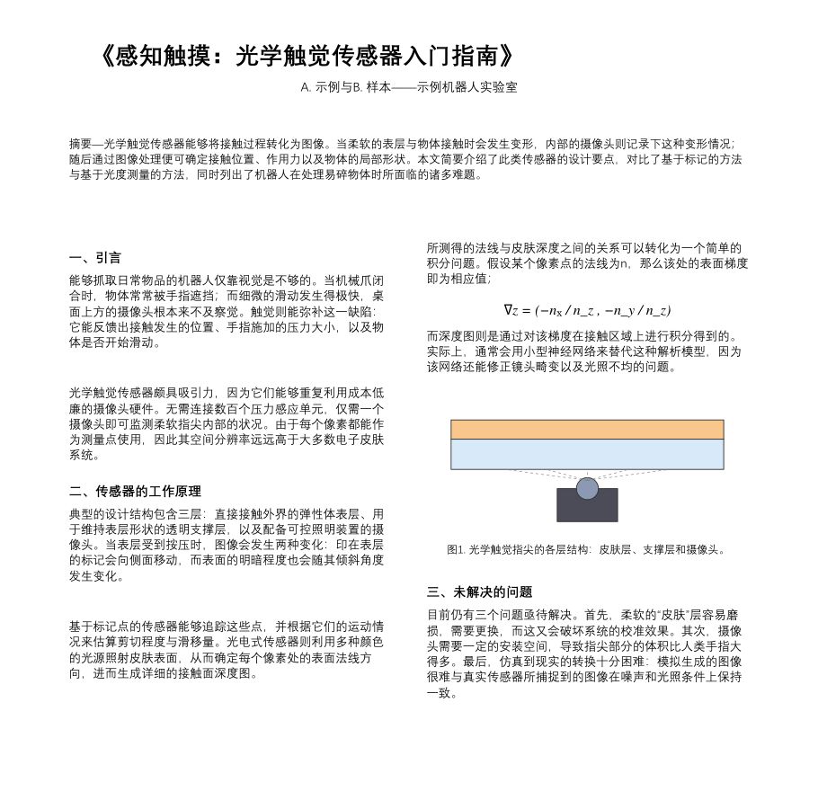
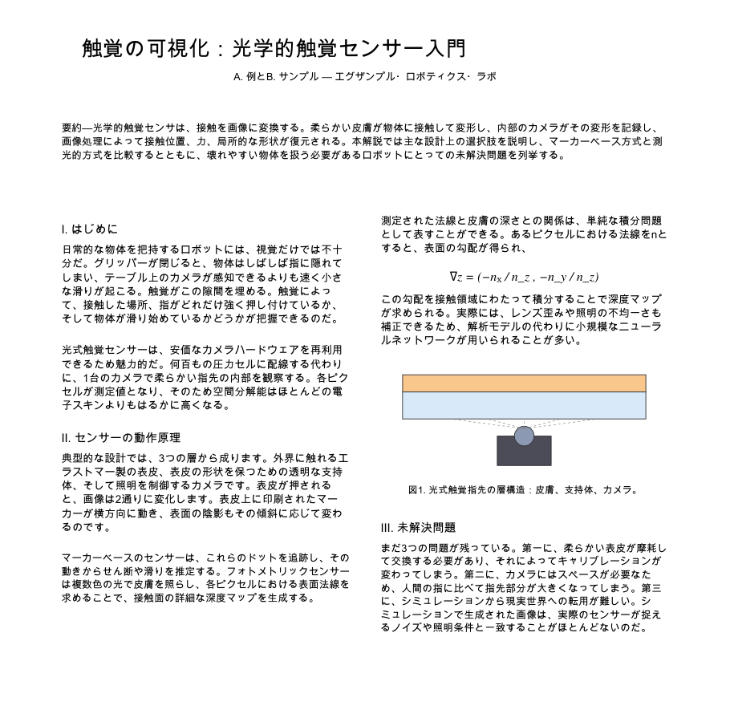
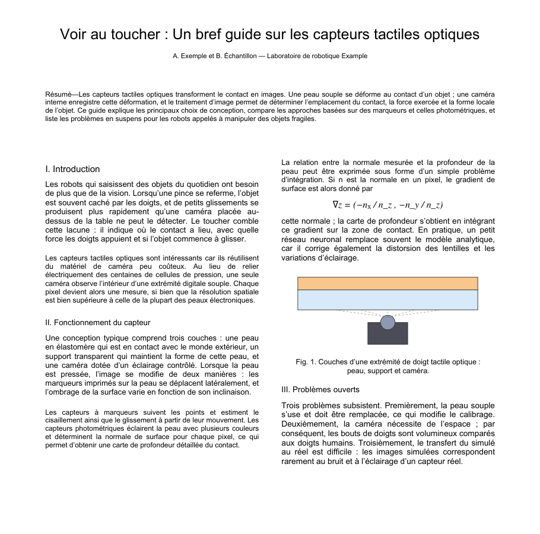
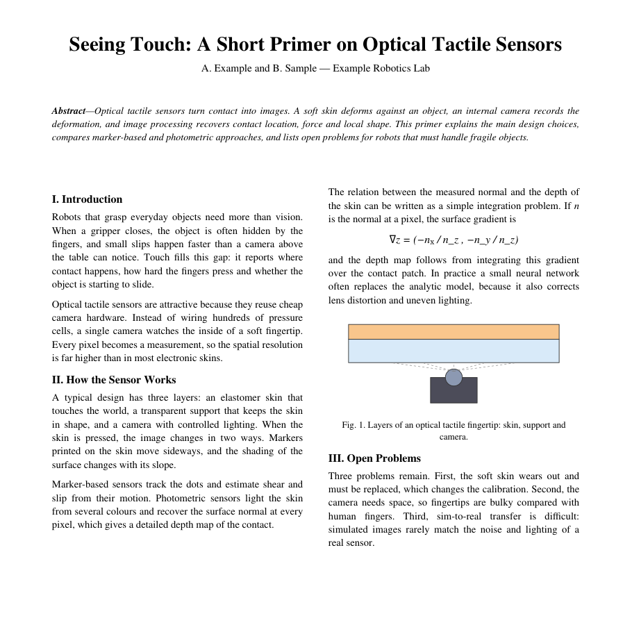

Translate it. Keep the page.
An offline Mac app that writes the translation back into the original layout, side by side with the source. A local model does the work; your files never leave your Mac.
Free and open sourcemacOS on Apple SiliconNo API key




English中文Drag across the page. Real output, unedited.